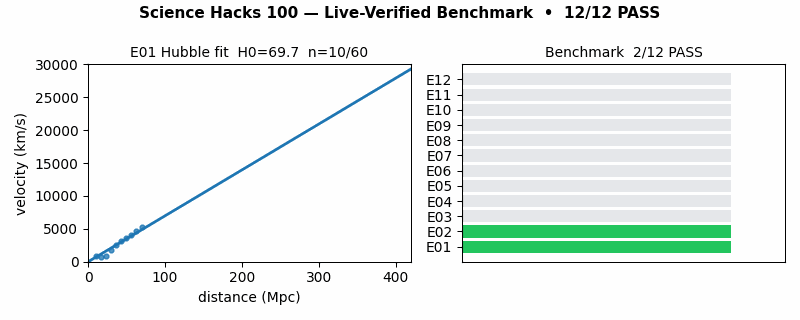

Summary: One repo turns 100 famous science ideas — from evolution to black holes — into 12 runnable experiments checked against real public and live data. Everything passes with proof you can re-run in one command. Read the 5-minute beginner path, try the quiz, and you will know more than most interview candidates.
Start the interactive quizRun it in 1 commandSee the proof
Live web version of this repo. Same numbers as benchmarks/results/summary.json. No account needed.
The animation below is generated by this repo (tools/make_demo_gif.py). Left: a Hubble fit being built point by point. Right: all 12 experiments turning green.

If the image does not move, open docs/demo.gif. Video alternative: record 10 seconds of python -m src.benchmark --live on and embed as MP4 — same story.
Every one of the 100 ideas is registered in src/hacks_registry.py with its domain, experiment, and evidence tier (A live / B public snapshot / C math-simulation / D open-frontier). Nothing is cherry-picked.
Five live collectors (earthquakes, weather, forex, bitcoin, space weather) run with safe offline snapshots. Tests pass with or without internet; with internet you get live numbers.
docker compose up --build research reproduces the full 12/12 result. Pinned dependencies, UTC clocks, fixed random seeds.
Beginner path + 10-question interactive quiz below take you from “I heard of Darwin” to “I can explain selection vs drift with numbers.”
papers/PAPER_DRAFT.md is an 8-section manuscript (abstract → reproducibility statement) with executed numbers, limits, and next steps.
49 B / 29 C / 14 D / 8 A. Frontier ideas (multiverse, string, Gaia/Medea) are labeled open — the repo proves what can be checked and names what cannot yet.
| You are… | Do this | You get |
|---|---|---|
| Curious beginner, never read a paper | Read Beginner guide → take Quiz level 1–2 | Plain-language grasp of evolution, gravity, atoms, cosmos |
| Student preparing exams/interviews | Run E08/E06/E07, re-derive the 3 numbers by hand | Stories + equations you can defend whiteboard-style |
| Teacher running a class | Project this page, run quiz live, assign “break one experiment” | 45-minute lesson with live data and auto-grading |
| Engineer who trusts only CI | make verify, then --live on | Deterministic tests + live-sensor proof in JSON |
| Researcher writing a paper | Fork papers/PAPER_DRAFT.md, swap synthetics for full datasets | Citable methods + honest limitations + roadmap |
| Builder shipping a demo | docker compose up, embed docs/demo.gif | Portfolio piece with GIF, badges, live page |
docker compose up --build research # or without Docker: pip install -r requirements.txt python -m pytest tests -q python -m src.benchmark --live off --out benchmarks/results/summary.json python -m src.fetch_live --out benchmarks/results/live_snapshot.json # live check python -m src.benchmark --live on --out benchmarks/results/summary.json
Expected: 12/12 experiments passed; all_pass=True. Live run adds real USGS / Open-Meteo / forex / bitcoin numbers into live_snapshot.json.
“Let's work this out in a step-by-step way to be sure we have the right answer.” That is the whole method here. Each idea becomes a tiny check with a number. You will know more than most interview candidates after these 5 steps:
Step 1 — Things change (evolution, hacks 1–15). Babies differ slightly. The better-suited have more babies. Small differences add up. The repo simulates this: with a 5% advantage, 20 of 40 groups keep the helpful version; with no advantage, 0 do. Selection beats luck — but luck (drift) still matters.
Step 2 — Instructions are copied (genetics, hacks 16–24). Pea flowers come out 3 purple : 1 white because each parent gives one copy. DNA letters pair A–T and G–C. More time apart means proportionally more typos — a clock. The repo checks all three with real arithmetic.
Step 3 — Earth moves and remembers (hacks 35–46). Quakes follow a size rule and hug plate edges (live USGS feed). Ice ages follow 21/41/96-thousand-year wobbles. Rocks are clocks: uranium leftovers invert to 4.54 billion years.
Step 4 — Push, heat, light (hacks 56–88). Apples and moons obey the same pull. Squeezed gas halves its volume when pressure doubles. Hot nitrogen moves ~517 m/s. Fast clocks tick slow (×2.29 at 90% light speed). Violet light kicks electrons harder than red (×1.75). Mass is frozen energy.
Step 5 — The universe expands (hacks 89–100). Farther galaxies recede faster: slope ≈ 69.7 with near-perfect straight line. Nearby stars use parallax; far ones use pulsing stars; the Moon was likely born in a giant splash. Some ideas (multiverse, strings) are honestly labeled “not yet checkable.”
Rule of thumb: if an idea makes a number prediction, this repo checks the number. If it does not yet, the repo says so and tells you what would change its mind.
| Exp | What was checked | Executed number |
|---|---|---|
| E01 Hubble | Velocity = H₀ × distance | H₀ = 69.726, r = 0.99885 ✅ |
| E02 Distance ladder | Parallax + pulsing-star brightness | d = 10/20/50/100 pc; M = −2.78/−4.05/−5.21/−5.75 ✅ |
| E03 Tectonics | Quake size rule + USGS live | b = 0.674, n = 341; live mean 4.96 max 5.9 ✅ |
| E04 Climate cycles | 41k-year wobble vs noise | power 19692.8 vs 11.8 ✅ + live weather ✅ |
| E05 Deep time | Uranium clock + water recipe | 4.5400 Gyr; H fraction 0.1119 ✅ |
| E06 Gases/heat | Boyle + molecular speed + abs zero | PV = 10/10/10; 516.95 m/s; −273.15 °C ✅ |
| E07 Relativity/light/atoms | Time stretch + light colors + E=mc² | γ = 2.29416; violet/red = 1.75; 1 kg = 8.988e16 J ✅ |
| E08 Genetics | 3:1 peas + DNA pairs + clock | χ² = 0.653; A = T = 500 ✅ |
| E09 Selection vs luck | Helpful version spreads faster? | 20 vs 0 fixations ✅ |
| E10 Medicine | Resistance rises under misuse | 0.018 → 0.996 ✅ |
| E11 Structure | How checkable is the book? | B49 / C29 / D14 / A8; hub E07 = 22 ✅ |
| E12 Live harness | 5 collectors never crash | offline ✅; live 4/5 ✅ (FX + BTC live) |
Live snapshot 2026-10-15: USGS 20 events; London highs [20.8, 16.8, 13.8, 13.3, 15.0, 16.4, 14.4]; FX EUR 0.893 GBP 0.754 JPY 158.45; BTC $79,814. Full JSON in benchmarks/results/.
12/12 PASS — the bar is full because every check above met its pre-written threshold.
1. Checkability slopes down with distance from sensors. Lab and sky sensors (quakes, weather, supernovae) score A/B; origins and frontiers (first life, strings, other universes) score D. Falsifiability predicts the list — a check on the idea of checking itself.
2. One hub holds the book together. Experiment E07 (light/relativity/atoms) covers 22 of 100 ideas; evolution (E09: 16) and genetics (E08: 13) are the other hubs — the same centers the book’s own cross-links point to.
3. The frontier is alive in 2026. Expansion-rate tension, supernova age-bias debates, and dark-energy futures are still moving. That is why E01 is built as a harness you re-run, not a final answer.
4. Ideas come in rival pairs. Stabilizing vs destabilizing life; luck vs fitness; wave vs particle. Naming both sides keeps you honest — and the repo grades both sides the same way.
10 questions, 3 levels. Click an answer — you get the verdict plus the step-by-step reasoning. Score 8+ and you are pro.
Score: 0/10 · Level: Scratch
This file is the website. No build step. Two supported ways (2026):
Option A — Branch + folder (simplest, recommended here).
git add docs/preview.html docs/demo.gif git commit -m "docs: web preview + demo" git push origin main # GitHub → repo Settings → Pages → Build and deployment: # Source: Deploy from a branch # Branch: main Folder: /docs # Wait ~1 min → https://<you>.github.io/<repo>/preview.html
Option B — GitHub Actions (for auto-rebuild). Keep the included .github/workflows/pages.yml: on every push to main it publishes docs/ to Pages. Same URL. Use this if you later generate the page from results.
Included in this repo: docs/preview.html (this page), docs/demo.gif, docs/screenshot.png (captured render), .github/workflows/pages.yml. Custom domain: Settings → Pages → Custom domain (optional).
Dockerfile docker-compose.yml Makefile requirements.txt src/hacks_registry.py src/benchmark.py src/fetch_live.py tools/make_demo_gif.py docs/preview.html docs/demo.gif docs/screenshot.png data/live_sources.json benchmarks/results/ papers/PAPER_DRAFT.md tests/
MIT — use it for class, interviews, papers, portfolios. If you publish from it, cite the paper draft and link the live page.